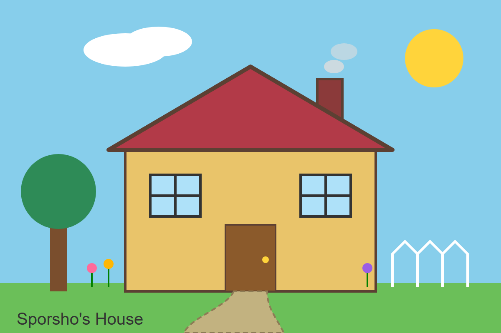
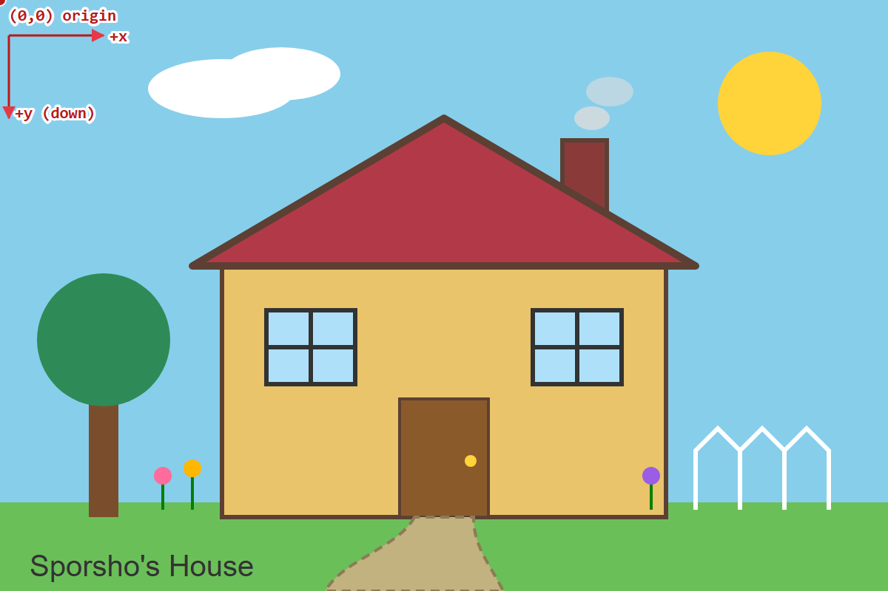
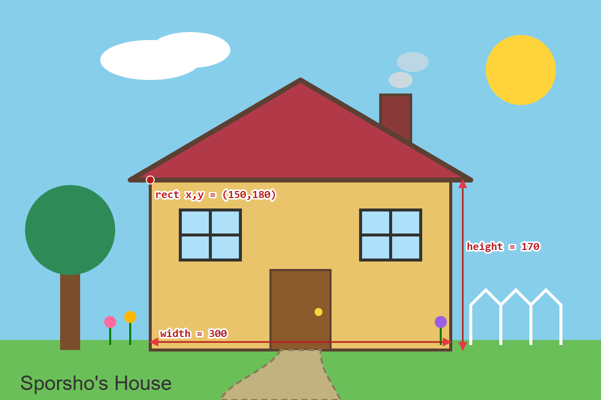
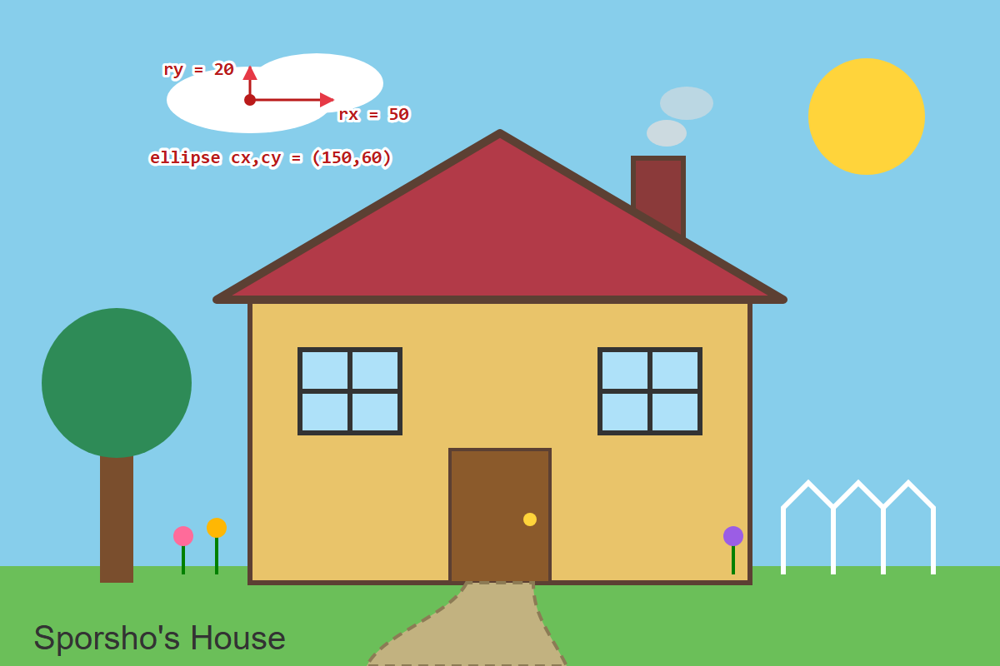
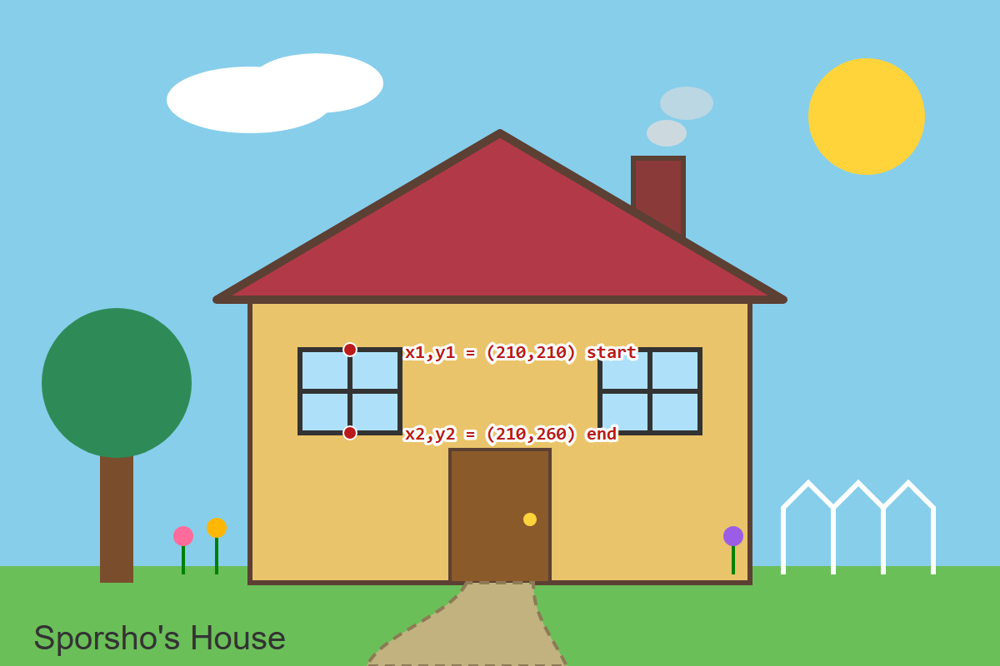
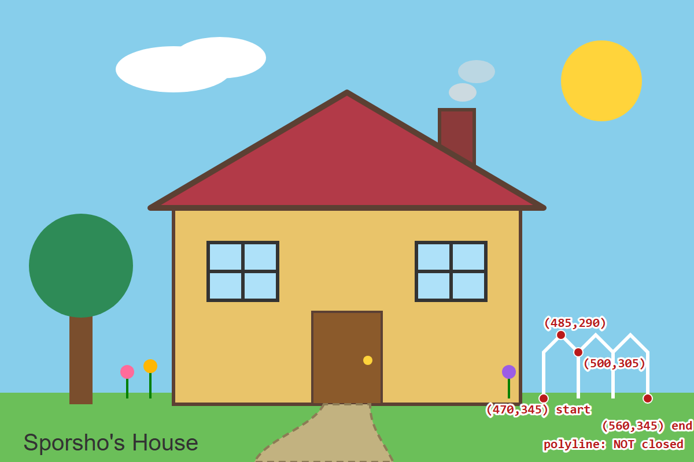
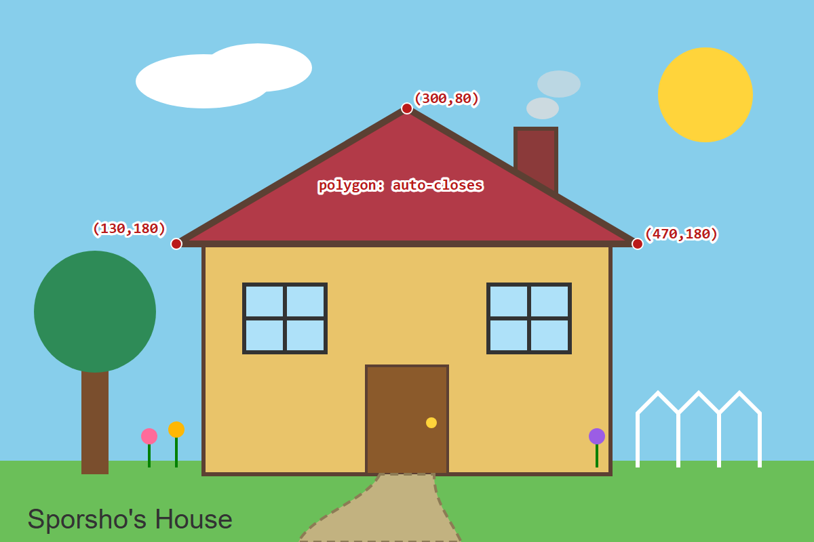
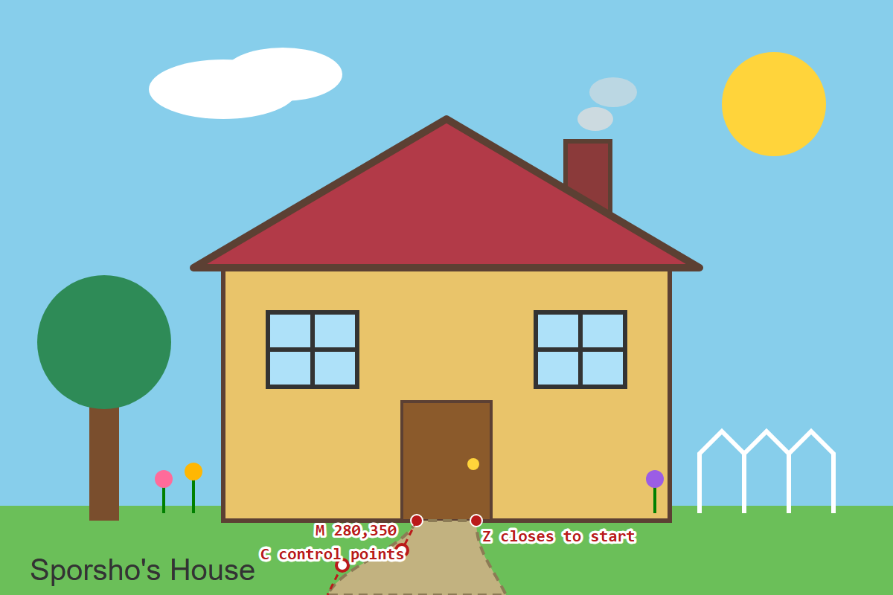
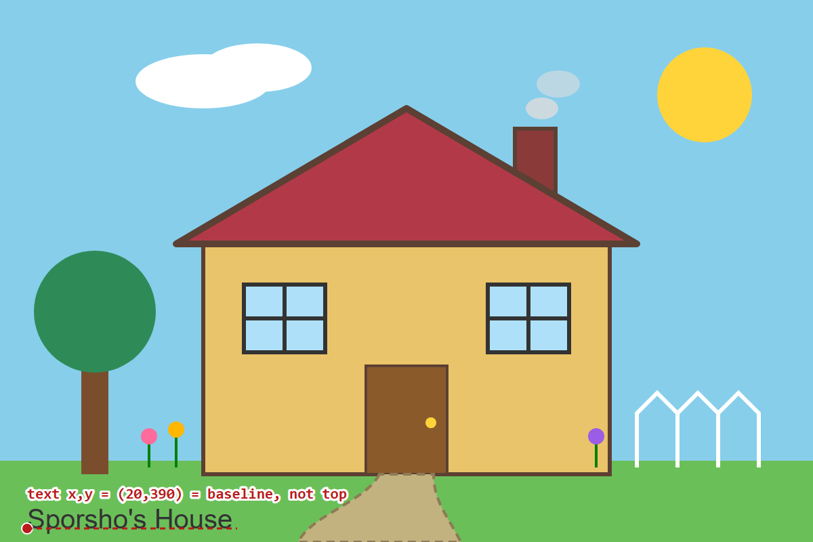

Exercise 4.1
Building a house and garden with SVG
A house and garden drawn using every SVG primitive: rect, circle, ellipse, line, polyline, polygon, path and text. The picture is annotated to show how the coordinates in the code match the drawing.
My SVG picture
Use the checkboxes to show or hide the annotation for each shape.
Before and after


What I changed
- Added a chimney (rect) behind the roof, with two semi-transparent smoke clouds (ellipse).
- Added flowers using line stems and circle petals.
- Changed the sky and house fill colours.
- Thickened the roof stroke to 5 and rounded its corners with
stroke-linejoin. - Gave the garden path a dashed outline using
stroke-dasharray.
Key idea
The SVG uses a coordinate area of 600 by 400. The origin (0,0) is at the top-left; x-coordinates increase to the right and y-coordinates increase downward. Elements written later in the code are drawn on top of earlier ones.
Understanding the SVG coordinate system








Using the group element
- Both windows sit inside one
<g>, sofill,strokeandstroke-widthare set once and inherited by both. - Each window is drawn at (0,0) and positioned with
transform="translate(x, y)". - Changing the outer group's fill updates both windows at the same time.
Use of generative AI
Tool used: Claude (Anthropic). Used for generating the starting SVG code, the annotation layer and page structure, restyling this page to match the rest of the site, and rendering the annotated screenshots. My own work: customising shapes, colours and strokes, and grouping the windows.